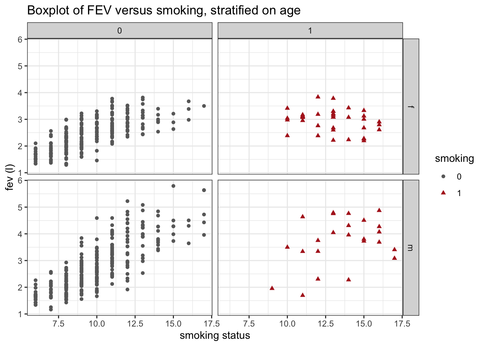

As an exercise on linear regression, we will analyse the FEV dataset.
The FEV dataset
The FEV, which is an acronym for forced expiratory volume, is a measure of how much air a person can exhale (in litres) during a forced breath. In this dataset, the FEV of 606 children, between the ages of 6 and 17, were measured. The dataset also provides additional information on these children: their age, their height, their gender and, most importantly, whether the child is a smoker or a non-smoker.
The overarching goal of this experiment was to find out if smoking has an effect on the FEV of children.
Load the required libraries
Import data
fev <- read_tsv("https://raw.githubusercontent.com/statOmics/PSLS21/data/fev.txt")
## Rows: 606 Columns: 5
## ── Column specification ────────────────────────────────────────────────────────
## Delimiter: "\t"
## chr (1): gender
## dbl (4): age, fev, height, smoking
##
## ℹ Use `spec()` to retrieve the full column specification for this data.
## ℹ Specify the column types or set `show_col_types = FALSE` to quiet this message.
There are a few things in the formatting of the data that can be improved upon:
- Both the
gender and smoking can be transformed to factors.
- The
height variable is written in inches. Assuming that this audience is mainly Portuguese/Belgian, inches are hard to interpret. Let’s add a new column, height_cm, with the values converted to centimeter using the mutate function.
fev <- fev %>%
mutate(gender = as.factor(gender)) %>%
mutate(smoking = as.factor(smoking)) %>%
mutate(height_cm = height*2.54)
head(fev)
Data Exploration
Now, let’s make a first explorative boxplot, showing only the FEV for both smoking categories.
fev %>%
ggplot(aes(x=smoking,y=fev,fill=smoking)) +
scale_fill_manual(values=c("dimgrey","firebrick")) +
theme_bw() +
geom_boxplot(outlier.shape=NA) +
geom_jitter(width = 0.2, size=0.1) +
ggtitle("Boxplot of FEV versus smoking") +
ylab("fev (l)") +
xlab("smoking status")
Did you expect these results?
It appears that children that smoke have a higher median FEV than children that do not smoke. Should we change legislations worldwide and make smoking obligatory for children?
Maybe there is something else going on in the data. Now, we will generate a similar plot, but we will stratify the data based on age (age as factor).
fev %>%
ggplot(aes(x=as.factor(age),y=fev,fill=smoking)) +
geom_boxplot(outlier.shape=NA) +
geom_point(width = 0.2, size = 0.1, position = position_jitterdodge()) +
theme_bw() +
scale_fill_manual(values=c("dimgrey","firebrick")) +
ggtitle("Boxplot of FEV versus smoking, stratified on age") +
ylab("fev (l)") +
xlab("smoking status")
## Warning: Ignoring unknown parameters: width

This plot seems to already give us a more plausible picture. First, it seems that we do not have any smoking children of ages 6, 7 or 8. Second, when looking at the results per age “category”, it seems no longer the case that smokers have a much higher FEV than non-smokers; for the higher ages, the contrary seems true.
This shows that taking into account confounders (in this case) is crucial! If we simply analyse the dataset based on the smoking status and FEV values only, our inference might be incorrect.
Can we provide an even better visualization of the data, taking into account more useful explanatory variables with respect to the FEV?
fev %>%
ggplot(aes(x=as.factor(age),y=fev,fill=smoking)) +
geom_boxplot(outlier.shape=NA) +
geom_point(width = 0.2, size = 0.1, position = position_jitterdodge()) +
theme_bw() +
scale_fill_manual(values=c("dimgrey","firebrick")) +
ggtitle("Boxplot of FEV versus smoking, stratified on age and gender") +
ylab("fev (l)") +
xlab("smoking status") +
facet_grid(rows = vars(gender))
## Warning: Ignoring unknown parameters: width

This plot holds one extra level of information, the gender of the child. Especially for higher ages, the median FEV is higher for males as compared to females.
The only source of information that is lacking is height. To look at the effect of height, we could simply make a scatterplot displaying the FEV in function of a child’s height (in cm). Additionally, we could color the dots based on gender.
fev %>%
ggplot(aes(x=height_cm,y=fev,color=gender)) +
geom_point() +
scale_color_manual(values=c("darkorchid","olivedrab4")) +
theme_bw() +
ggtitle("Boxplot of FEV versus height") +
ylab("fev (l)") +
xlab("height (cm)")

There is a clear relationship between height and FEV. In addition, we see that for the large height values (>175cm), we mainly find male subjects.
Linear regression nalysis
Assumptions of linear regression
List the assumptions:
- The observations are independent of each other
- Linearity between the response and predictor variable
- The residues of the model must be normally distributed
- Homoscedasticity of the data
Independence
The first assumption is not met. There are patterns of relatedness in the data. Indeed, we expect that fish of the same species have a more similar response to the poison as compared to fish of another species. Equivalently, we expect that fish of the same weight have a more similar response to the poison as compared to fish of different weight.
For now, we will ignore this problem. In a later tutorial, we will see how we can account for this dependence by including the species data and weigth data in the linear model (class on multiple regression). As such, you may assume the assumption is met.
We will check the other assumptions by first fitting the linear model and plotting the output. As such, we will get all the required diagnostic plots.
model <- lm(fev~smoking, data=fev)
## display the diagnostic plots of the model
plot(model)


We have four diagnostic plots:
Linearity with the Residuals vs fitted plot
- predictor of predictions \(\hat\beta_0+\hat\beta_1 x\) on \(X\)-axis
- residuals on \(Y\)-as \[e_i=y_i-\hat{g}(x_i)=y_i-\hat\beta_0-\hat\beta_1\times x_i,\]
If there would be a linear relationship in the data, the residuals are expected to lie on the y=0 line for the entire range of predicted values. Based on the first diagnostic plot, the linearity assumption is met.
Normal Q-Q
- QQ-plot of the residuals \(e_i\).
The residuals of the linear regression model should be normally distributed. Based on the second diagnostic plot, the normality assumption is not met.
Homoscedasticity
- Square-root of the absolute value of standardized residuals in function of the fitted values
To meet the third assumption of linear regression, the variance on the Square-root of the absolute value of standardized residuals must be similar over the entire range of fitted values. The smoother in the plot helps us with looking at this; it should be nicely horizontal over the entire range of fitted values. This is clearly not the case here; based on the third diagnostic plot, the homosccedasticity assumption is met.
Conclusion
Interpretation on the log scale
Currently, all the outcomes should be interpreted on the log-scale. Indeed, since we are now modelling the log FEV, we don’t have direct inference on the FEV as such
We may interpret the output as follows:
If the smoking status changes from 0 (non-smoking) to 1 (smoking), the natural logarithm of FEV will increase, on average, by 0.22591 units (95% CI [0.1472777,0.3045423]). This increase is significant on the 5% significance level (p=2.58e-08).
The average natural logarithm of FEV for children that have smoking status 0 is 0.92286 (95% CI [0.1472777; 0.3045423]). This value is significantly different from 0 on the 5% significance level (< 2e-16).
Interpretation on the original scale
The interpretation the log-scale is quite difficult: the natural logarithm survival time is not exactly a casual measure. To ease the interpetation, we may backtransform the results to the original scale (time in minutes). This we can do by taking the exponent of the outcomes:
exp(summary(log.model)$coefficients[,"Estimate"])
## (Intercept) smoking1
## 2.516487 1.253463
and of their confidence intervals:
## 2.5 % 97.5 %
## (Intercept) 2.454484 2.580058
## smoking1 1.158676 1.356004
Now, we can interpret the results in terms of the geometric mean:
If the smoking status changes from 0 (non-smoking) to 1 (smoking), the geometric mean of the FEV will increase, on average, by 1.253463 liters (95% CI [1.158676; 1.356004]). This increase is significant on the 5% significance level (p=2.58e-08).
The geometric mean of the FEV for children that have smoking status 0 is 2.516487 liters (95% CI [2.454484; 2.580058]). This value is significantly different from 0 on the 5% significance level (< 2e-16).
Again, note that in this dataset the assumption of independence is actually not met. In the tutorial of multiple regression, we will revisit this exercise. More specifically, we will there study the association between smoking and FEV while accounting for differences in the age, height and gender of the children.
LS0tCnRpdGxlOiAiRXhlZXJjaXNlIDYuMjogTGluZWFyIHJlZ3Jlc3Npb24gb24gdGhlIEZFViBkYXRhc2V0IC0gc29sdXRpb24iICAgCmF1dGhvcjogIkxpZXZlbiBDbGVtZW50IGFuZCBKZXJvZW4gR2lsaXMiCmRhdGU6ICJzdGF0T21pY3MsIEdoZW50IFVuaXZlcnNpdHkgKGh0dHBzOi8vc3RhdG9taWNzLmdpdGh1Yi5pbykiICAKb3V0cHV0OgogICAgaHRtbF9kb2N1bWVudDoKICAgICAgY29kZV9kb3dubG9hZDogdHJ1ZSAgICAKICAgICAgdGhlbWU6IGNvc21vCiAgICAgIHRvYzogdHJ1ZQogICAgICB0b2NfZmxvYXQ6IHRydWUKICAgICAgaGlnaGxpZ2h0OiB0YW5nbwogICAgICBudW1iZXJfc2VjdGlvbnM6IHRydWUKLS0tCgpBcyBhbiBleGVyY2lzZSBvbiBsaW5lYXIgcmVncmVzc2lvbiwgd2Ugd2lsbCBhbmFseXNlIHRoZSBGRVYgZGF0YXNldC4KCiMgVGhlIEZFViBkYXRhc2V0CgpUaGUgRkVWLCB3aGljaCBpcyBhbiBhY3JvbnltIGZvciBmb3JjZWQgZXhwaXJhdG9yeSB2b2x1bWUsCmlzIGEgbWVhc3VyZSBvZiBob3cgbXVjaCBhaXIgYSBwZXJzb24gY2FuIGV4aGFsZSAoaW4gbGl0cmVzKSAKZHVyaW5nICBhIGZvcmNlZCBicmVhdGguIEluIHRoaXMgZGF0YXNldCwgdGhlIEZFViBvZiA2MDYgY2hpbGRyZW4sCmJldHdlZW4gdGhlIGFnZXMgb2YgNiBhbmQgMTcsIHdlcmUgbWVhc3VyZWQuIFRoZSBkYXRhc2V0CmFsc28gcHJvdmlkZXMgYWRkaXRpb25hbCBpbmZvcm1hdGlvbiBvbiB0aGVzZSBjaGlsZHJlbjoKdGhlaXIgYGFnZWAsIHRoZWlyIGBoZWlnaHRgLCB0aGVpciBgZ2VuZGVyYCBhbmQsIG1vc3QKaW1wb3J0YW50bHksIHdoZXRoZXIgdGhlIGNoaWxkIGlzIGEgc21va2VyIG9yIGEgbm9uLXNtb2tlci4KClRoZSBvdmVyYXJjaGluZyBnb2FsIG9mIHRoaXMgZXhwZXJpbWVudCB3YXMgdG8gZmluZCBvdXQgaWYKc21va2luZyBoYXMgYW4gZWZmZWN0IG9uIHRoZSBGRVYgb2YgY2hpbGRyZW4uCgojIExvYWQgdGhlIHJlcXVpcmVkIGxpYnJhcmllcwoKYGBge3IsIG1lc3NhZ2UgPSBGQUxTRX0KbGlicmFyeSh0aWR5dmVyc2UpCmBgYAoKIyBJbXBvcnQgZGF0YQoKYGBge3J9CmZldiA8LSByZWFkX3RzdigiaHR0cHM6Ly9yYXcuZ2l0aHVidXNlcmNvbnRlbnQuY29tL3N0YXRPbWljcy9QU0xTMjEvZGF0YS9mZXYudHh0IikKaGVhZChmZXYpCmBgYAoKVGhlcmUgYXJlIGEgZmV3IHRoaW5ncyBpbiB0aGUgZm9ybWF0dGluZyBvZiB0aGUKZGF0YSB0aGF0IGNhbiBiZSBpbXByb3ZlZCB1cG9uOgoKMS4gQm90aCB0aGUgYGdlbmRlcmAgYW5kIGBzbW9raW5nYCBjYW4gYmUgdHJhbnNmb3JtZWQgdG8KZmFjdG9ycy4KMi4gVGhlIGBoZWlnaHRgIHZhcmlhYmxlIGlzIHdyaXR0ZW4gaW4gaW5jaGVzLiBBc3N1bWluZyB0aGF0CnRoaXMgYXVkaWVuY2UgaXMgbWFpbmx5IFBvcnR1Z3Vlc2UvQmVsZ2lhbiwgaW5jaGVzIGFyZSBoYXJkIHRvCmludGVycHJldC4gTGV0J3MgYWRkIGEgbmV3IGNvbHVtbiwgYGhlaWdodF9jbWAsIHdpdGggdGhlIHZhbHVlcwpjb252ZXJ0ZWQgdG8gY2VudGltZXRlciB1c2luZyB0aGUgYG11dGF0ZWAgZnVuY3Rpb24uIAoKYGBge3J9CmZldiA8LSBmZXYgJT4lCiAgbXV0YXRlKGdlbmRlciA9IGFzLmZhY3RvcihnZW5kZXIpKSAlPiUKICBtdXRhdGUoc21va2luZyA9IGFzLmZhY3RvcihzbW9raW5nKSkgJT4lCiAgbXV0YXRlKGhlaWdodF9jbSA9IGhlaWdodCoyLjU0KQoKaGVhZChmZXYpCmBgYAoKCiMgRGF0YSBFeHBsb3JhdGlvbgoKTm93LCBsZXQncyBtYWtlIGEgZmlyc3QgZXhwbG9yYXRpdmUgYm94cGxvdCwgc2hvd2luZwpvbmx5IHRoZSBGRVYgZm9yIGJvdGggc21va2luZyBjYXRlZ29yaWVzLgoKYGBge3J9CmZldiAlPiUKICBnZ3Bsb3QoYWVzKHg9c21va2luZyx5PWZldixmaWxsPXNtb2tpbmcpKSArCiAgc2NhbGVfZmlsbF9tYW51YWwodmFsdWVzPWMoImRpbWdyZXkiLCJmaXJlYnJpY2siKSkgKwogIHRoZW1lX2J3KCkgKwogIGdlb21fYm94cGxvdChvdXRsaWVyLnNoYXBlPU5BKSArIAogIGdlb21faml0dGVyKHdpZHRoID0gMC4yLCBzaXplPTAuMSkgKwogIGdndGl0bGUoIkJveHBsb3Qgb2YgRkVWIHZlcnN1cyBzbW9raW5nIikgKwogIHlsYWIoImZldiAobCkiKSArCiAgeGxhYigic21va2luZyBzdGF0dXMiKQpgYGAKCkRpZCB5b3UgZXhwZWN0IHRoZXNlIHJlc3VsdHM/CgpJdCBhcHBlYXJzIHRoYXQgY2hpbGRyZW4gdGhhdCBzbW9rZSBoYXZlIGEgaGlnaGVyCm1lZGlhbiBGRVYgdGhhbiBjaGlsZHJlbiB0aGF0IGRvIG5vdCBzbW9rZS4gClNob3VsZCB3ZSBjaGFuZ2UgbGVnaXNsYXRpb25zIHdvcmxkd2lkZSBhbmQgbWFrZSAKc21va2luZyBvYmxpZ2F0b3J5IGZvciBjaGlsZHJlbj8KCk1heWJlIHRoZXJlIGlzIHNvbWV0aGluZyBlbHNlIGdvaW5nIG9uIGluIHRoZSBkYXRhLgpOb3csIHdlIHdpbGwgZ2VuZXJhdGUgYSBzaW1pbGFyIHBsb3QsIGJ1dCB3ZSB3aWxsCnN0cmF0aWZ5IHRoZSBkYXRhIGJhc2VkIG9uIGFnZSAoYWdlIGFzIGZhY3RvcikuCgpgYGB7cn0KZmV2ICU+JQogIGdncGxvdChhZXMoeD1hcy5mYWN0b3IoYWdlKSx5PWZldixmaWxsPXNtb2tpbmcpKSArCiAgZ2VvbV9ib3hwbG90KG91dGxpZXIuc2hhcGU9TkEpICsKICBnZW9tX3BvaW50KHdpZHRoID0gMC4yLCBzaXplID0gMC4xLCBwb3NpdGlvbiA9IHBvc2l0aW9uX2ppdHRlcmRvZGdlKCkpICsKICB0aGVtZV9idygpICsKICBzY2FsZV9maWxsX21hbnVhbCh2YWx1ZXM9YygiZGltZ3JleSIsImZpcmVicmljayIpKSArCiAgZ2d0aXRsZSgiQm94cGxvdCBvZiBGRVYgdmVyc3VzIHNtb2tpbmcsIHN0cmF0aWZpZWQgb24gYWdlIikgKwogIHlsYWIoImZldiAobCkiKSArCiAgeGxhYigic21va2luZyBzdGF0dXMiKQpgYGAKClRoaXMgcGxvdCBzZWVtcyB0byBhbHJlYWR5IGdpdmUgdXMgYSBtb3JlCnBsYXVzaWJsZSBwaWN0dXJlLiBGaXJzdCwgaXQgc2VlbXMgdGhhdCB3ZSBkbyBub3QgaGF2ZQphbnkgc21va2luZyBjaGlsZHJlbiBvZiBhZ2VzIDYsIDcgb3IgOC4gU2Vjb25kLCB3aGVuCmxvb2tpbmcgYXQgdGhlIHJlc3VsdHMgcGVyIGFnZSAiY2F0ZWdvcnkiLCBpdCBzZWVtcwpubyBsb25nZXIgdGhlIGNhc2UgdGhhdCBzbW9rZXJzIGhhdmUgYSBtdWNoIGhpZ2hlciBGRVYKdGhhbiBub24tc21va2VyczsgZm9yIHRoZSBoaWdoZXIgYWdlcywgdGhlIGNvbnRyYXJ5CnNlZW1zIHRydWUuCgpUaGlzIHNob3dzIHRoYXQgdGFraW5nIGludG8gYWNjb3VudCBjb25mb3VuZGVycwooaW4gdGhpcyBjYXNlKSBpcyBjcnVjaWFsISBJZiB3ZSBzaW1wbHkgYW5hbHlzZSB0aGUgZGF0YXNldCBiYXNlZCBvbgp0aGUgc21va2luZyBzdGF0dXMgYW5kIEZFViB2YWx1ZXMgb25seSwgb3VyIGluZmVyZW5jZSBtaWdodApiZSBpbmNvcnJlY3QuCgpDYW4gd2UgcHJvdmlkZSBhbiBldmVuIGJldHRlciB2aXN1YWxpemF0aW9uIG9mIHRoZSBkYXRhLCB0YWtpbmcKaW50byBhY2NvdW50IG1vcmUgdXNlZnVsIGV4cGxhbmF0b3J5IHZhcmlhYmxlcyB3aXRoIHJlc3BlY3QKdG8gdGhlIEZFVj8KCmBgYHtyfQpmZXYgJT4lCiAgZ2dwbG90KGFlcyh4PWFzLmZhY3RvcihhZ2UpLHk9ZmV2LGZpbGw9c21va2luZykpICsKICBnZW9tX2JveHBsb3Qob3V0bGllci5zaGFwZT1OQSkgKwogIGdlb21fcG9pbnQod2lkdGggPSAwLjIsIHNpemUgPSAwLjEsIHBvc2l0aW9uID0gcG9zaXRpb25faml0dGVyZG9kZ2UoKSkgKwogIHRoZW1lX2J3KCkgKwogIHNjYWxlX2ZpbGxfbWFudWFsKHZhbHVlcz1jKCJkaW1ncmV5IiwiZmlyZWJyaWNrIikpICsKICBnZ3RpdGxlKCJCb3hwbG90IG9mIEZFViB2ZXJzdXMgc21va2luZywgc3RyYXRpZmllZCBvbiBhZ2UgYW5kIGdlbmRlciIpICsKICB5bGFiKCJmZXYgKGwpIikgKwogIHhsYWIoInNtb2tpbmcgc3RhdHVzIikgKyAKICBmYWNldF9ncmlkKHJvd3MgPSB2YXJzKGdlbmRlcikpCmBgYAoKVGhpcyBwbG90IGhvbGRzIG9uZSBleHRyYSBsZXZlbCBvZiBpbmZvcm1hdGlvbiwgdGhlIGdlbmRlciAKb2YgdGhlIGNoaWxkLiBFc3BlY2lhbGx5IGZvciBoaWdoZXIgYWdlcywgdGhlIG1lZGlhbiBGRVYKaXMgaGlnaGVyIGZvciBtYWxlcyBhcyBjb21wYXJlZCB0byBmZW1hbGVzLgoKVGhlIG9ubHkgc291cmNlIG9mIGluZm9ybWF0aW9uIHRoYXQgaXMgbGFja2luZyBpcyBgaGVpZ2h0YC4KVG8gbG9vayBhdCB0aGUgZWZmZWN0IG9mIGhlaWdodCwgd2UgY291bGQgc2ltcGx5IG1ha2UgYQpzY2F0dGVycGxvdCBkaXNwbGF5aW5nIHRoZSBGRVYgaW4gZnVuY3Rpb24gb2YgYSBjaGlsZCdzCmhlaWdodCAoaW4gY20pLiBBZGRpdGlvbmFsbHksIHdlIGNvdWxkIGNvbG9yIHRoZSBkb3RzIGJhc2VkCm9uIGdlbmRlci4KCmBgYHtyfQpmZXYgJT4lCiAgZ2dwbG90KGFlcyh4PWhlaWdodF9jbSx5PWZldixjb2xvcj1nZW5kZXIpKSArCiAgZ2VvbV9wb2ludCgpICsKICBzY2FsZV9jb2xvcl9tYW51YWwodmFsdWVzPWMoImRhcmtvcmNoaWQiLCJvbGl2ZWRyYWI0IikpICsKICB0aGVtZV9idygpICsKICBnZ3RpdGxlKCJCb3hwbG90IG9mIEZFViB2ZXJzdXMgaGVpZ2h0IikgKwogIHlsYWIoImZldiAobCkiKSArCiAgeGxhYigiaGVpZ2h0IChjbSkiKQpgYGAKClRoZXJlIGlzIGEgY2xlYXIgcmVsYXRpb25zaGlwIGJldHdlZW4gaGVpZ2h0IGFuZCBGRVYuCkluIGFkZGl0aW9uLCB3ZSBzZWUgdGhhdCBmb3IgdGhlIGxhcmdlIGhlaWdodCB2YWx1ZXMKKD4xNzVjbSksIHdlIG1haW5seSBmaW5kIG1hbGUgc3ViamVjdHMuCgojIExpbmVhciByZWdyZXNzaW9uIG5hbHlzaXMKCiMjIEFzc3VtcHRpb25zIG9mIGxpbmVhciByZWdyZXNzaW9uCgpMaXN0IHRoZSBhc3N1bXB0aW9uczoKCjEuIFRoZSBvYnNlcnZhdGlvbnMgYXJlIGluZGVwZW5kZW50IG9mIGVhY2ggb3RoZXIKMi4gTGluZWFyaXR5IGJldHdlZW4gdGhlIHJlc3BvbnNlIGFuZCBwcmVkaWN0b3IgdmFyaWFibGUKMy4gVGhlIHJlc2lkdWVzIG9mIHRoZSBtb2RlbCBtdXN0IGJlIG5vcm1hbGx5IGRpc3RyaWJ1dGVkCjQuIEhvbW9zY2VkYXN0aWNpdHkgb2YgdGhlIGRhdGEKCiMjIyBJbmRlcGVuZGVuY2UKClRoZSBmaXJzdCBhc3N1bXB0aW9uIGlzICoqbm90IG1ldCoqLiBUaGVyZSBhcmUgcGF0dGVybnMKb2YgcmVsYXRlZG5lc3MgaW4gdGhlIGRhdGEuIEluZGVlZCwgd2UgZXhwZWN0IHRoYXQKZmlzaCBvZiB0aGUgc2FtZSBzcGVjaWVzIGhhdmUgYSBtb3JlIHNpbWlsYXIgcmVzcG9uc2UgdG8KdGhlIHBvaXNvbiBhcyBjb21wYXJlZCB0byBmaXNoIG9mIGFub3RoZXIgc3BlY2llcy4KRXF1aXZhbGVudGx5LCB3ZSBleHBlY3QgdGhhdCBmaXNoIG9mIHRoZSBzYW1lIHdlaWdodCBoYXZlIAphIG1vcmUgc2ltaWxhciByZXNwb25zZSB0byB0aGUgcG9pc29uIGFzIGNvbXBhcmVkIHRvIGZpc2ggCm9mIGRpZmZlcmVudCB3ZWlnaHQuIAoKKipGb3Igbm93LCB3ZSB3aWxsIGlnbm9yZSB0aGlzIHByb2JsZW0qKi4gSW4gYSBsYXRlciAKdHV0b3JpYWwsIHdlIHdpbGwgc2VlIGhvdyB3ZSBjYW4gYWNjb3VudCBmb3IgdGhpcyBkZXBlbmRlbmNlCmJ5IGluY2x1ZGluZyB0aGUgc3BlY2llcyBkYXRhIGFuZCB3ZWlndGggZGF0YSBpbiB0aGUgbGluZWFyIG1vZGVsCihjbGFzcyBvbiBtdWx0aXBsZSByZWdyZXNzaW9uKS4gQXMgc3VjaCwgKip5b3UgbWF5IGFzc3VtZSoqCioqdGhlIGFzc3VtcHRpb24gaXMgbWV0LioqCgpXZSB3aWxsIGNoZWNrIHRoZSBvdGhlciBhc3N1bXB0aW9ucyBieSBmaXJzdCBmaXR0aW5nIHRoZSBsaW5lYXIKbW9kZWwgYW5kIHBsb3R0aW5nIHRoZSBvdXRwdXQuIEFzIHN1Y2gsIHdlIHdpbGwgZ2V0IGFsbCB0aGUKcmVxdWlyZWQgZGlhZ25vc3RpYyBwbG90cy4KCmBgYHtyfQptb2RlbCA8LSBsbShmZXZ+c21va2luZywgZGF0YT1mZXYpIAoKIyMgZGlzcGxheSB0aGUgZGlhZ25vc3RpYyBwbG90cyBvZiB0aGUgbW9kZWwKcGxvdChtb2RlbCkKYGBgCgpXZSBoYXZlIGZvdXIgZGlhZ25vc3RpYyBwbG90czoKCiMjIyBMaW5lYXJpdHkgd2l0aCB0aGUgUmVzaWR1YWxzIHZzIGZpdHRlZCBwbG90CgotIHByZWRpY3RvciBvZiBwcmVkaWN0aW9ucyAkXGhhdFxiZXRhXzArXGhhdFxiZXRhXzEgeCQgb24gJFgkLWF4aXMKLSAqcmVzaWR1YWxzKiBvbiAkWSQtYXMKJCRlX2k9eV9pLVxoYXR7Z30oeF9pKT15X2ktXGhhdFxiZXRhXzAtXGhhdFxiZXRhXzFcdGltZXMgeF9pLCQkCgpJZiB0aGVyZSB3b3VsZCBiZSBhIGxpbmVhciByZWxhdGlvbnNoaXAgaW4gdGhlIGRhdGEsCnRoZSByZXNpZHVhbHMgYXJlIGV4cGVjdGVkIHRvIGxpZSBvbiB0aGUgeT0wIGxpbmUgZm9yCnRoZSBlbnRpcmUgcmFuZ2Ugb2YgcHJlZGljdGVkIHZhbHVlcy4gQmFzZWQgb24gdGhlIGZpcnN0CmRpYWdub3N0aWMgcGxvdCwgdGhlIGxpbmVhcml0eSBhc3N1bXB0aW9uIGlzIG1ldC4KCiMjIyBOb3JtYWwgUS1RCgotIFFRLXBsb3Qgb2YgdGhlIHJlc2lkdWFscyAkZV9pJC4KClRoZSByZXNpZHVhbHMgb2YgdGhlIGxpbmVhciByZWdyZXNzaW9uIG1vZGVsIHNob3VsZCBiZSBub3JtYWxseQpkaXN0cmlidXRlZC4gQmFzZWQgb24gdGhlIHNlY29uZCBkaWFnbm9zdGljIHBsb3QsIHRoZSBub3JtYWxpdHkKYXNzdW1wdGlvbiBpcyBub3QgbWV0LgoKIyMjIEhvbW9zY2VkYXN0aWNpdHkKCi0gU3F1YXJlLXJvb3Qgb2YgdGhlIGFic29sdXRlIHZhbHVlIG9mIHN0YW5kYXJkaXplZCByZXNpZHVhbHMKaW4gZnVuY3Rpb24gb2YgdGhlIGZpdHRlZCB2YWx1ZXMKClRvIG1lZXQgdGhlIHRoaXJkIGFzc3VtcHRpb24gb2YgbGluZWFyIHJlZ3Jlc3Npb24sIHRoZSB2YXJpYW5jZQpvbiB0aGUgX1NxdWFyZS1yb290IG9mIHRoZSBhYnNvbHV0ZSB2YWx1ZSBvZiBzdGFuZGFyZGl6ZWQgcmVzaWR1YWxzXwptdXN0IGJlIHNpbWlsYXIgb3ZlciB0aGUgZW50aXJlIHJhbmdlIG9mIGZpdHRlZCB2YWx1ZXMuIFRoZSBzbW9vdGhlcgppbiB0aGUgcGxvdCBoZWxwcyB1cyB3aXRoIGxvb2tpbmcgYXQgdGhpczsgaXQgc2hvdWxkIGJlIG5pY2VseQpob3Jpem9udGFsIG92ZXIgdGhlIGVudGlyZSByYW5nZSBvZiBmaXR0ZWQgdmFsdWVzLiBUaGlzIGlzIGNsZWFybHkKbm90IHRoZSBjYXNlIGhlcmU7IGJhc2VkIG9uIHRoZSB0aGlyZCBkaWFnbm9zdGljIHBsb3QsIHRoZSBob21vc2NjZWRhc3RpY2l0eQphc3N1bXB0aW9uIGlzIG1ldC4KCiMjIExvZyB0cmFuc2Zvcm1hdGlvbgoKVGhlIG5vcm1hbGl0eSBhc3N1bXB0aW9uIHdhcyBub3QgbWV0LCBzbyB3ZSBjYW5ub3QgY29udGludWUgd2l0aCAKcGVyZm9ybWluZyBhIGxpbmVhciByZWdyZXNzaW9uIGFuYWx5c2lzLgoKT25lIHBvc3NpYmlsaXR5IGlzIHRvIGxvZy10cmFuc2Zvcm0gdGhlIGRhdGEuIEluZGVlZCwgZGF0YSB3aXRoIGhlYXZ5CnJpZ2h0IHRhaWxzIGNhbiBvZnRlbiBiZSBub3JtYWxpemVkIGJ5IGFwcGx5aW5nIHRoaXMgc3RyYXRlZ3kKCkdlbmVyYXRlIGEgbmV3IGNvbHVtbiBpbiB0aGUgcG9pc29uIGRhdGFzZXQsIGNvbnRhaW5pbmcgdGhlIApsb2ctdHJhbnNmb3JtZWQgc3Vydml2YWwgdGltZXMuCgpgYGB7cn0KZmV2IDwtIGZldiAlPiUKICBtdXRhdGUobG9nLmZldiA9IGxvZyhmZXYpKQpgYGAKClJlZml0IHRoZSAobG9nLSlsaW5lYXIgbW9kZWwuIEdlbmVyYXRlIGRpYWdub3N0aWMgcGxvdHMuCkFzc2VzcyB0aGUgYXNzdW1wdGlvbnMuCgpgYGB7cn0KbG9nLm1vZGVsIDwtIGxtKGxvZy5mZXZ+c21va2luZyxkYXRhPWZldikKcGxvdChsb2cubW9kZWwpCmBgYAoKVXBvbiBsb2ctdHJhbnNmb3JtYXRpb24sIGFsbCB0aGUgcmVxdWlyZWQgYXNzdW1wdGlvbiAoZXhjZXB0IHRoZSBvbmUgCmZvciBpbmRlcGVuZGVuY2UsIHNlZSBhYm92ZSkgYXJlIG1ldC4KCkxvb2sgYXQgdGhlIG91dHB1dCBvZiB0aGUgbG9nLWxpbmVhciBtb2RlbDoKCmBgYHtyfQpzdW1tYXJ5KGxvZy5tb2RlbCkKYGBgCgpDb21wdXRlIHRoZSA5NSUgY29uZmlkZW5jZSBpbnRlcnZhbCBvbiB0aGUgbW9kZWwgcGFyYW1ldGVyczoKCmBgYHtyfQpjb25maW50KGxvZy5tb2RlbCkKYGBgCgojIENvbmNsdXNpb24KCiMjIEludGVycHJldGF0aW9uIG9uIHRoZSBsb2cgc2NhbGUgCgpDdXJyZW50bHksIGFsbCB0aGUgb3V0Y29tZXMgc2hvdWxkIGJlIGludGVycHJldGVkIG9uIHRoZSBsb2ctc2NhbGUuCkluZGVlZCwgc2luY2Ugd2UgYXJlIG5vdyBtb2RlbGxpbmcgIF90aGUgbG9nIEZFVl8sIHdlIGRvbid0IGhhdmUgZGlyZWN0IAppbmZlcmVuY2Ugb24gdGhlIEZFViBhcyBzdWNoCgpXZSBtYXkgaW50ZXJwcmV0IHRoZSBvdXRwdXQgYXMgZm9sbG93czoKCi0gVGhlIHNsb3BlOgoKSWYgdGhlIHNtb2tpbmcgc3RhdHVzIGNoYW5nZXMgZnJvbSAwIChub24tc21va2luZykgdG8gMSAoc21va2luZyksCnRoZSBuYXR1cmFsIGxvZ2FyaXRobSBvZiBGRVYgd2lsbCBpbmNyZWFzZSwgb24gYXZlcmFnZSwKYnkgMC4yMjU5MSB1bml0cyAoOTUlIENJIFswLjE0NzI3NzcsMC4zMDQ1NDIzXSkuIFRoaXMgaW5jcmVhc2UgaXMgc2lnbmlmaWNhbnQKb24gdGhlIDUlIHNpZ25pZmljYW5jZSBsZXZlbCAocD0yLjU4ZS0wOCkuCgotIFRoZSBpbnRlcmNlcHQ6CgpUaGUgYXZlcmFnZSBuYXR1cmFsIGxvZ2FyaXRobSBvZiBGRVYgZm9yIGNoaWxkcmVuIHRoYXQKaGF2ZSBzbW9raW5nIHN0YXR1cyAwIGlzIDAuOTIyODYgKDk1JSBDSSBbMC4xNDcyNzc3OyAwLjMwNDU0MjNdKS4gVGhpcwp2YWx1ZSBpcyBzaWduaWZpY2FudGx5IGRpZmZlcmVudCBmcm9tIDAgb24gdGhlIDUlIHNpZ25pZmljYW5jZSBsZXZlbAooPCAyZS0xNikuCgojIyBJbnRlcnByZXRhdGlvbiBvbiB0aGUgb3JpZ2luYWwgc2NhbGUgCgpUaGUgaW50ZXJwcmV0YXRpb24gdGhlIGxvZy1zY2FsZSBpcyBxdWl0ZSBkaWZmaWN1bHQ6IHRoZSBuYXR1cmFsIApsb2dhcml0aG0gc3Vydml2YWwgdGltZSBpcyBub3QgZXhhY3RseSBhIGNhc3VhbCBtZWFzdXJlLiBUbyBlYXNlIAp0aGUgaW50ZXJwZXRhdGlvbiwgd2UgbWF5IGJhY2t0cmFuc2Zvcm0gdGhlIHJlc3VsdHMgdG8gdGhlIG9yaWdpbmFsCnNjYWxlICh0aW1lIGluIG1pbnV0ZXMpLiBUaGlzIHdlIGNhbiBkbyBieSB0YWtpbmcgdGhlIGV4cG9uZW50IG9mCnRoZSBvdXRjb21lczoKCmBgYHtyfQpleHAoc3VtbWFyeShsb2cubW9kZWwpJGNvZWZmaWNpZW50c1ssIkVzdGltYXRlIl0pCmBgYAoKYW5kIG9mIHRoZWlyIGNvbmZpZGVuY2UgaW50ZXJ2YWxzOgoKYGBge3J9CmV4cChjb25maW50KGxvZy5tb2RlbCkpCmBgYAoKTm93LCB3ZSBjYW4gaW50ZXJwcmV0IHRoZSByZXN1bHRzIGluIHRlcm1zIG9mIHRoZSBnZW9tZXRyaWMgbWVhbjoKCi0gVGhlIHNsb3BlOgoKSWYgdGhlIHNtb2tpbmcgc3RhdHVzIGNoYW5nZXMgZnJvbSAwIChub24tc21va2luZykgdG8gMSAoc21va2luZyksCnRoZSBnZW9tZXRyaWMgbWVhbiBvZiB0aGUgRkVWIHdpbGwgaW5jcmVhc2UsIG9uIGF2ZXJhZ2UsCmJ5IDEuMjUzNDYzIGxpdGVycyAoOTUlIENJIFsxLjE1ODY3NjsgMS4zNTYwMDRdKS4gVGhpcyBpbmNyZWFzZSBpcyAKc2lnbmlmaWNhbnQgb24gdGhlIDUlIHNpZ25pZmljYW5jZSBsZXZlbCAocD0yLjU4ZS0wOCkuCgotIFRoZSBpbnRlcmNlcHQ6CgpUaGUgZ2VvbWV0cmljIG1lYW4gb2YgdGhlIEZFViBmb3IgY2hpbGRyZW4gdGhhdCBoYXZlIHNtb2tpbmcgc3RhdHVzIDAgCmlzIDIuNTE2NDg3IGxpdGVycyAoOTUlIENJIFsyLjQ1NDQ4NDsgMi41ODAwNThdKS4gClRoaXMgdmFsdWUgaXMgc2lnbmlmaWNhbnRseSBkaWZmZXJlbnQgZnJvbSAwIG9uIHRoZSA1JSBzaWduaWZpY2FuY2UgbGV2ZWwKKDwgMmUtMTYpLgoKQWdhaW4sIG5vdGUgdGhhdCBpbiB0aGlzIGRhdGFzZXQgdGhlIGFzc3VtcHRpb24gb2YgKippbmRlcGVuZGVuY2UqKgppcyBhY3R1YWxseSAqKm5vdCBtZXQqKi4gSW4gdGhlIHR1dG9yaWFsIG9mIG11bHRpcGxlIHJlZ3Jlc3Npb24sCndlIHdpbGwgcmV2aXNpdCB0aGlzIGV4ZXJjaXNlLiBNb3JlIHNwZWNpZmljYWxseSwgd2Ugd2lsbCB0aGVyZSBzdHVkeSAKdGhlIGFzc29jaWF0aW9uIGJldHdlZW4gc21va2luZyBhbmQgRkVWIHdoaWxlIGFjY291bnRpbmcgZm9yCmRpZmZlcmVuY2VzIGluIHRoZSBhZ2UsIGhlaWdodCBhbmQgZ2VuZGVyIG9mIHRoZSBjaGlsZHJlbi4KCgoKCgoKCgoK